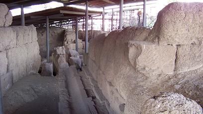

|
Las siete colinas de Roma
Las siete colinas de la Roma antigua eran:
El Aventino (Collis Aventinus), de 47
metros de alto. Constituyó un punto estratégico en el control del comercio
sobre el río Tíber.
El Capitolino (Capitolinus, tenía
dos cimas: el Arx y el Capitolium) de 50 metros de alto se localiza entre
el Foro y el Campo de Marte, es una de las más famosas de Roma.
Primitivamente era llamado monte de Saturno. En esta colina se hallaba el
templo Júpiter Optimus Maximus, donde terminaban los triunfos y se
realizaban las ofrendas al dios.
El Celio (Caelius) de 50 metros de alto. Se
han descubierto restos de magníficas villas en un muy buen estado de
conservación.
El Esquilino (Esquilinus, tres cimas: el
Cispius, el Fagutalis y el Oppius), de 64 metros de alto. Dio su nombre a
una de las cuatro regiones en las que se dividió la ciudad en época
republicana.
| El Palatino (Collis Palatinus, tres
cimas: el Cermalus, el Palatium y el Velia) de 51 metros de alto, es la
más céntrica, se alza entre el Foro Romano, y el Circo Máximo. En el
Palatino era el lugar donde estaba el Lupercal. Las excavaciones recientes
en la zona muestran que ha estado habitado desde aproximadamente el año
1000 a.e.c. |
|
 |
Sobre ella se emplazaron los primeros pobladores de la Roma Cuadrata, que se fueron extendiendo luego sobre las colinas cercanas. Es
la colina más famosa de Roma. Posteriormente la colina pasó a ser la
residencia de los emperadores de Roma que en ella erigieron sus suntuosos
palacios, como la casa de Augusto, la casa de Flavio y la casa de Tiberio,
los baños de Séptimio Severo muy bien conservados pudiendo observarse las
canalizaciones hacia los mismos, el palacio de Domiciano, el templo de la
Magna Mater, de las diosa Victoria….
Posteriormente la colina Palatina fue la residencia de los reyes godos y
de algunos papas y emperadores del Imperio de Occidente; en la Edad Media
se edificaron en él conventos e iglesias. En el siglo XVI, una buena parte
de la colina fue ocupada por las inmensas estructuras de la Villa Farnesio
y de los jardines Farmesianos. |
El Quirinal (Quirinalis, tres cimas: el
Latiaris, el Mucialis o Sanqualis, y el Salutaris), de 61 metros de alto.
Su nombre proviene del dios romano Quirino.
La Colina Viminal (Collis Viminalis) es la
más pequeña.
|